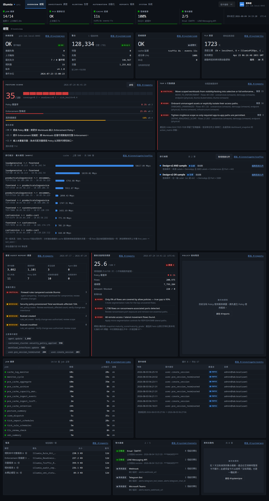

總覽
#/overview
系統狀態、posture score、待辦動作與近期事件收在同一頁；健康列只出現在本頁（頂欄下方），離開總覽就收起來。
暗色主題 · 1440 寬全頁
原尺寸開啟 ↗

本頁功能錨點 · 16
OV-01系統狀態總覽卡OV-02posture score 卡+詳情OV-03Top Actions 區OV-04自訂查詢卡 CRUDOV-05Top10 查詢OV-06audit 摘要卡OV-07policy usage 摘要卡OV-08dashboard snapshotOV-09報表最近產出 metaOV-10pipeline 健康摘要(唯讀)OV-11job 健康摘要(唯讀)OV-12資料完整性卡(唯讀)OV-13近期事件表OV-14TLS 卡OV-15告警管道卡(唯讀)OV-16Integrations 狀態卡摘要(_buildOvCards)
在此頁驗收的跨區元件 · 5
XC-01全域健康列 5 燈+popoverXC-02Cmd+K 指令面板XC-10錯誤卡+重試+技術細節XC-13頂欄使用者選單XC-14URL hash 路由狀態同步